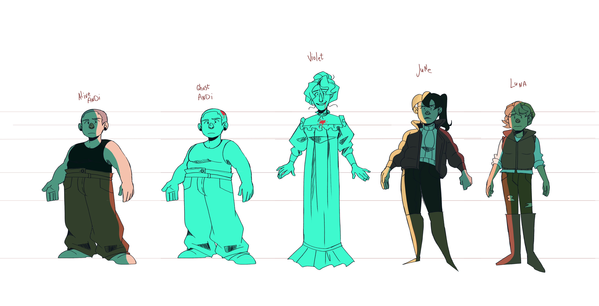
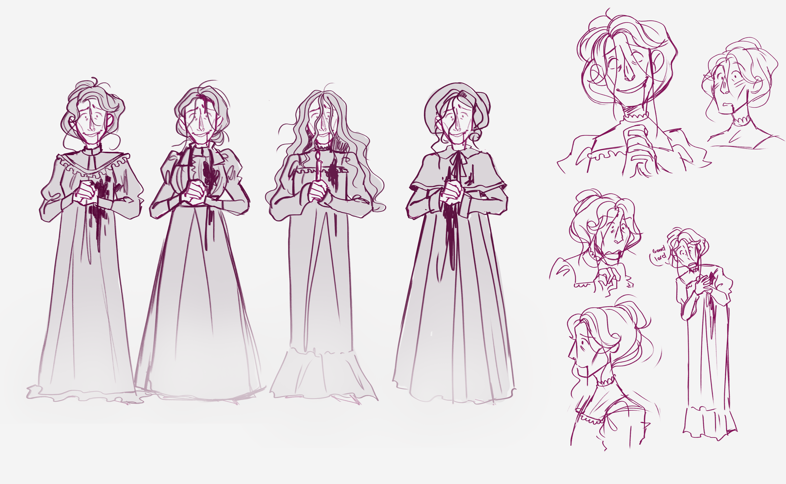

Dearly Departed is my graduation film made during my Masters at AKV St Joost. It’s a queer comedy horror about accidental death, interfering ghost hunters and how joy can be found despite the hand the (after)life can deal you. Animated fully in TvPaint, with music by Thomas Madill.
 